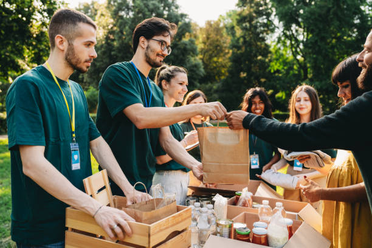

We began as a group of individuals united by a shared desire
to make a positive impact in our community.
Recognizing the diverse
needs around us, we set out to create a flexible platform for support,
addressing various challenges and fostering growth.